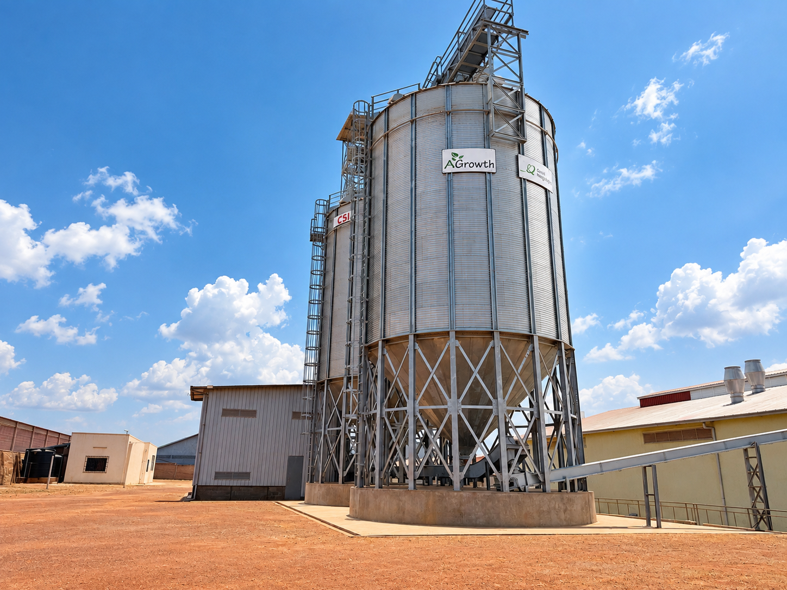
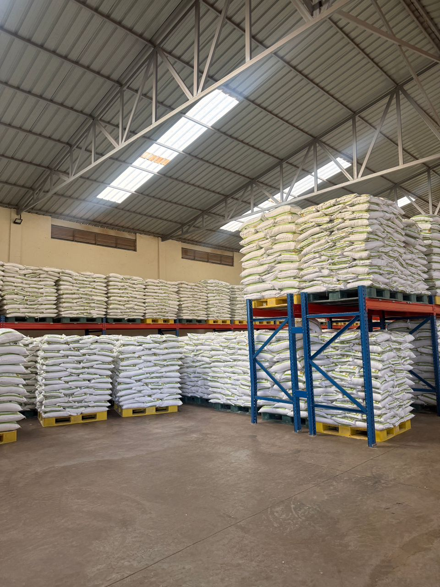

Fortified Maize Flour
Maize flour enriched with added nutrients for everyday meals.
Available in 5kg, 10kg, and 25kg bulk packaging.
View Our ProductsExperience the purity of NURIRA maize flour, milled from the finest local grains in Kigali.
From our fields to your table, we deliver premium quality for healthier communities.
High-quality maize flour products crafted for institutional and wholesale partners across Rwanda.
Maize flour enriched with added nutrients for everyday meals.
Available in 5kg, 10kg, and 25kg bulk packaging.
View Our Products
Fine, white maize flour for smooth and satisfying everyday meals.
Available in 5kg, 10kg, and 25kg bulk packaging.
View Our Products
A flour option from AGrowth’s range for your everyday cooking needs.
Available in 5kg, 10kg, and 25kg bulk packaging.
View Our ProductsOur milling facility in Kigali operates under strict quality standards, ensuring that every batch of NURIRA maize flour meets the highest international benchmarks for purity and nutritional integrity.
Learn About Quality

Founded in 2020 in the heart of Kigali, AGrowth Ltd began as a social enterprise with a clear mission: to elevate Rwandan agriculture and nourish the nation. We are dedicated to the journey of transforming locally sourced maize into our premium NURIRA flour, serving as a vital link between hardworking farmers and the tables of our communities.
Our impact goes beyond milling; we empower local growers by providing a reliable market while utilizing state-of-the-art technology to process their harvest. By blending time-honored Rwandan agricultural wisdom with modern industrial precision,
We ensure that every bag delivered to our institutional partners and wholesale buyers meets rigorous global quality standards. Today, we stand as a beacon of sustainable growth, committed to fighting food insecurity and fostering economic resilience through every batch of flour we produce.
We combine traditional Rwandan agricultural wisdom with modern milling technology to ensure every product meets the highest standards for institutional buyers and wholesale partners.
Contact Our Team